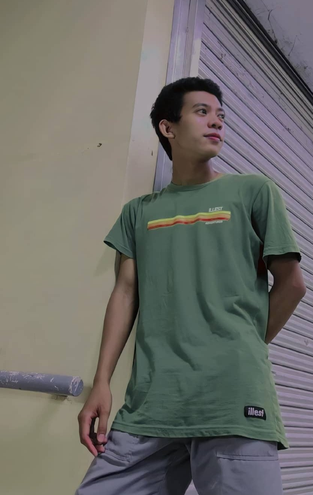

About Me
Hi, I'm John Paul Valenzuela Lopez, I hold a bachelor's degree in Information Technology from Aurora State College of Technology and am proud to be a Career Service Professional Eligible. I have a working knowledge of Microsoft Office, particularly Excel, and some experience with programming.
Beyond my professional background, I’m passionate about basketball and love diving into online games during my free time. I'm always eager to learn, grow, and take on new challenges in both technology and life.
Who and What Build Me
My Sample Project
Family
Father: Juanito Allera Lopez
Mother: Gemma Valenzuela Lopez
Siblings: Beverly, Aldrin🕊️, Claire Diane, and Jhon Kate Lopez
I can say that my family has always been a source of strength, inspiration, and motivation for me because I am the youngest of five siblings. They have helped me overcome every challenge and shaped my core beliefs.
Education
Elementary: San Luis Central Elementary School (2008-2014)
Junior High School: Mayor Cesario A. Pimentel National High School (2014-2018)
Senior High School: Mount Carmel College Annex Baler (2018-2020)
College: Aurora State College of Technology (Information Technology, 2020-2024)
Technical/Vocational Education: Provincial Manpower Training Center (Computer System Servicing, November 2024)
Other Interests
Beyond academics and work, I enjoy playing basketball, Fishing, and exploring online games. These activities help me unwind and stay balanced.
My work Experience
OJT: Aurora State College of Technology-Scholarship Unit
February-May 2024
Cash for Work (DSWD): Aurora State College of Technology-Scholarship Unit
July-October 2024
Pantawin Pamilyang Pilipino Program 4Ps (DSWD): San Luis, Aurora
February 2024-Present
Eligibility
Career Service Professional Eligibility
My Personal Website
Link: MyPersonalWebsite
Contact Me
Email: lopezjohnpaul838@gmail.com
Mobile Number: 09383273262
Facebook: John Paul Lopez
Instagram: ampol_lopez